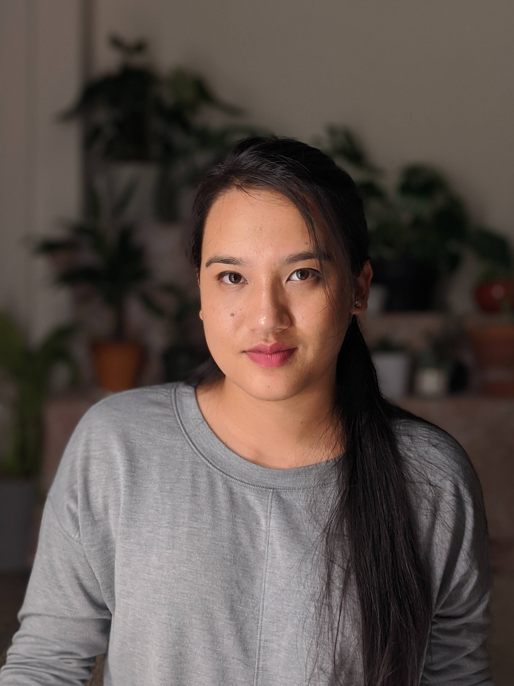

About me
About me

I’m a UX/UI designer with a background in architecture.
Has helped me to be become attention to detail,
empathetic toward human and
create more user centric design
Story telling
My involvement in sport has helped me to become/ taught about team player.
Love for adventures has made a go getter, curious, full of enthusiasm to ready to explore and ready for new challenges.
Behind the camera than in front Photography
Cooking
New love for plant
Dog and babies
Outside UX I love to travel,
I am a UX/UI designer. My Background in architecture has made me become more
With background in architecture I have able to be more aware about hu
GET RESUME